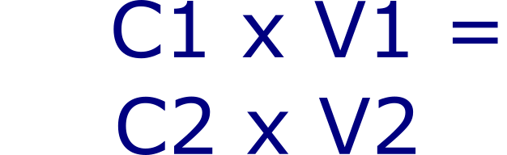
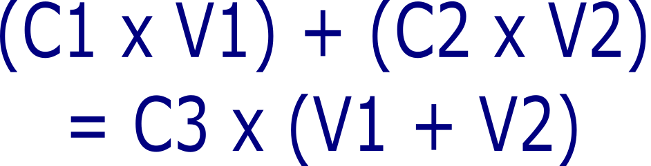

DSP Web Tools
A set of tools for DSP workflows
Buffers
Go back to the topDilution calculator
Use this to use a standard C1 x V1 = C2 x V2 dilution
Modified dilution calculator
Use this when you are diluting a solution that already has some of your solute in it.
Concentration from mass
Use this to work out the how much solid mass of solute to use to make a fixed concentration solution.
Chromatography
Go back to the topResidence Time Calculator
Calculate the residence time from given flow velocity and bed height
Bed Volume Calculator
Convert between bed height and bed volume for chromatography columns
Flow Rate Converter
Convert between linear flow velocity and volumetric flow rate for chromatography columns.
Column Selector Tool
Choose the best column based on bed height or resin volume